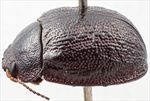
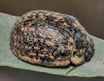
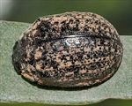
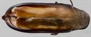
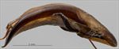
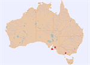

Click on images to enlarge
_sml.jpg){kind=link}

Male, Barossa Reservoir, South Australia


Female, Emu Bay, Kangaroo Is, South Australia


Female, Emu Bay, Kangaroo Is, South Australia


Aedeagus, dorsal view (Emu Bay, Kangaroo Is, South Australia)


Aedeagus, lateral view (Emu Bay, Kangaroo Is, South Australia)


Distribution
Name
Trachymela sordida (Blackburn)
Reference specimen
2019-059b, Emu Bay, Kangaroo Is., South Australia.
Adult Description
Length: ♂ 8.0–9.4 mm (n=4), ♀ 7.9–10.1 mm (n=7).
Colouration:
- Head: uniformly dark to very dark brown, rarely with clypeus slightly darker, mandibles dark brown with black tips; antennomere 1 light- to mid-brown, 2–3 straw-brown, 4–5 grading from straw-brown to black, 6–11 black.
- Pronotum: uniformly dark to very dark brown, concolorous with or fractionally darker than rear of head, with lateral margins rarely slightly paler in shade.
- Scutellum: dark brown, concolorous with adjacent region of pronotum.
- Elytra: dark brown, mostly concolorous with disc of pronotum with small inconspicuous flecks of slightly lighter colour usually present on disc, arranged in 3 or 4 longitudinal series, marginal area is also mostly of this lighter shade; punctures concolorous with surrounding area, humeral callus dark brown or black.
- Venter & Legs: venter generally uniformly very dark brown or black, rarely with very slightly lighter brown areas; elytral epipleura black.
- Cuticular Wax: light brown to orange-brown, with patchy distribution; concentrations present in two patches on head, along lateral margins of pronotum, in a thin band along lateral margins of elytra (in sub-marginal sulcus), 2 small patches at base of each elytron and small flecks arranged in 3–4 longitudinal lines from about middle of elytron towards apex; elsewhere wax scattered very sparsely or absent.
Morphology:
- Head: punctures moderately large (pd ≈ 2–3×ef) and slightly unevenly but densely distributed, interstices sometimes rough. Antennae short (AL/BL: ♂ 38–40%, ♀ 37–38%), filiform.
- Pronotum: almost evenly curved transversely over all but lateral margins which are slightly explanate, foveal depression absent, instead epidermis there may be slightly elevated in a broad circular area, sometimes with slightly smaller punctures; discal area with surface very slightly uneven, nitid, and puncturation clearly impressed with punctures similar in size to those on head but usually less closely distributed, evenly to very slightly unevenly distributed and relatively dense (spacing ≈ 1.5–2pd), becoming noticeably coarser towards lateral margins. Front margins join lateral margins in a smoothly rounded right-angle, with lateral margin curving smoothly and gradually towards rear margin, broadest about 3/4 of distance to posterio-lateral angle.
- Scutellum: unpunctured, sometimes surface finely wrinkled.
- Elytra: body profile quite evenly rounded but relatively flat, highest point about halfway along elytral margin; viewed laterally, curvature of dorsal surface even and gentle over anterior 80%, then much tighter over posterior 25%; punctures surrounded by very convex interstices, closely spaced and rather evenly distributed, interstices thickened in many places forming small elevated verrucae at their intersections joined by short elevated ridges oriented longitudinally or transversely, forming a complex granular surface; area adjacent to suture in front of elytral summit sometimes contains 2 or 3 smooth raised interstices extending posteriorly from near anterior edge; punctures may be more clearly defined but smaller in a smooth area straddling elytral summit; elytral suture slightly carinate in posterior third; posterior third of marginal area moderately concave; surface discontinuous under humeral callus. Vertical extension of epipleura relatively small (HCE/PW = 0.29–0.32).
- Venter: ventrites project a short distance below elytral epipleura; prosternal process almost parallel or narrowing anteriorly, closed anteriorly, at most a very sparse scatter of setae present along prosternal process and on mesoventrite; a single long seta present on anterior, median, and posterior trochanters; front edge of metaventrite beveled, flat; inner edge of epipleurae lacking setae or, less often, with a light scatter of very short setae.
Male Genitalia (Aedeagus):
- Dimensions: short (LPE/BL = 31–33%).
- Dorsal view: shaft approximately parallel-sided or, rarely, very slightly sinuate with maximum width at or just behind posterior of ostium (WPE/LPE = 0.28–0.31), from where sides converge smoothly and gradually towards apex, tip triangular, dorsal surface lightly sclerotized, dorso-median channel present but often short and poorly defined, ostium relatively large; flagellum relatively thick and slightly flattened, with a thin, longitudinal groove in center of dorsal surface.
- Lateral view: shaft quite evenly and continually curved over whole length, tip deflexed.
Immature Stages
Unknown.
Similar species
- Ta21: a very dark brown species that occurs on the New England Tablelands of NSW. The pattern of cuticular wax distribution on the elytra can quite closely resemble that of Ta173, and in fact the two species are very difficult to separate morphologically. Ta21 has its elytral disc more finely granulated and its aedeagus tends to be more slender in dorsal view and less curved in lateral view.
- Ta166: a species from the northern New England Tablelands that has the same pattern of granularity and distribution of cuticular wax on its elytra as Ta173. It is distinguishable by its aedeagus which has a larger spatula, a broadly blunt apex, and a flagellum that is very broad and deeply grooved on its dorsal surface.
- Ta170: another species that closely resembles Ta173 due to the similar distribution of cuticular wax, but can be immediately distinguished by its brown epipleura, as well as its possession of a relatively large patch of cuticular wax in the area of the anterio-median depression.
- Ta171: occurs in southern New South Wales and Victoria and differs from Ta173 by the possession of moderately-sized verrucae over much of the elytral disc. It is also distinguishable by its proportionately shorter aedeagus.
- Ta25: an abundant species that co-occurs with Ta173 and can appear superficially very similar. It is easily separable from Ta173 by its possession of trochanters with multiple setae.
Notes
- Taxonomy: Identification as Trachymela sordida (Blackburn) is by comparison with the type specimen in the Natural History Museum, London (BMNH).
- Host Associations: Ta173 has been recorded from Eucalyptus odorata and E. leucoxylon (both within section Adnataria), with a single specimen from Kangaroo Island found on E. cosmophylla.
Copyright © 2026. All rights reserved.